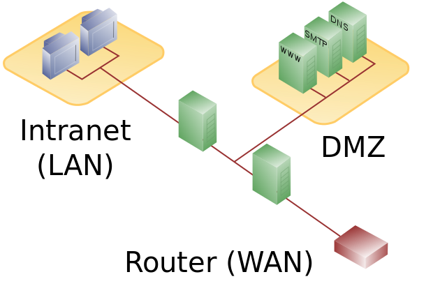

In the single firewall network there are three legs: the internal network, the dmz, and the external network. In this network the firewall is a single point of failure. It has to handle traffic going to both the DMZ and the internal network.
In the dual firewall network there are two firewalls. One that connects to both the DMZ and internal network, and another one for just the internal network. This is a more secure approach then just using a single firewall, as all the communication that goes to the potentially sensitive information has to go through multiple firewalls.